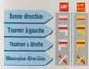

Alta Via n° 1
De Gressoney à Courmayeur, en 8 étapes. L’étape 8 arrive par le val Ferret.
Alta Via n° 2
De Château-Champorcher à Courmayeur en 6 étapes. L’étape 5 franchit le pas de Planaval, l’étape 6 franchit le colle di Chavannes et termine par le val Veny.
GR 5
Plusieurs livrets FFRP en vente.
Un des plus anciens sentiers de grande randonnée, de la Méditerranée au Léman.
Dans la zone, il emprunte le Tour du Beaufortain jusqu'au col du Bonhomme, puis le Tour du Mont Blanc plus au nord.
Tour du Ruitor
Sentier des Refuges
Balises rouge et jaune portant la mention SR.
Tour de Haute Tarentaise
TMB (Tour du Mont Blanc)
Topo-guide© FFRP en vente en librairie.
Le sentier le plus fréquenté.
TPMB (Tour du Pays du Mont Blanc)
Topo-guide© FFRP en vente en librairie.
Compter 5 ou 6 jours.
Tour du Beaufortain
Topo-guide© FFRP en vente en librairie.
Sentier du Baroque
En une ou mieux deux journées, on va de l’église de Combloux à celle de Notre Dame de la Gorge en passant par un maximum d’édifices baroques.
20 km, dénivelé 300 m.
Se faire accompagner pour se faire ouvrir les chapelles et pour les explications.
Livret en vente (environ 6 euros) dans les Offices de Tourisme de St Gervais et des Contamines Montjoie. Nouvelle édition en 2002.